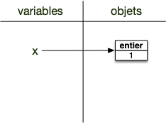
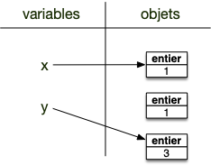
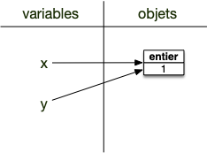

Variables
Les variables permettent à l'interpréteur de se rappeler d'objets qu'il a crée lors d'exécutions précédentes. Sans elles, on ne pourrait exécuter que des lignes indépendantes les unes entre elles : bref, on ne pourrait rien faire d'intéressant.
Une variable est un nom auquel est associé un objet.
Pour associer un nom à un objet on utilise l’opérateur d’affectation = tel que:
nom = objetA gauche de l’opérateur d'affection = se trouve une variable (en gros, un nom ne pouvant commencer par un nombre) et à droite un objet. Après affectation, dans toute la suite du programme l'interpréteur python remplacera la variable par l'objet à chaque fois qu'elle la rencontrera.
Une variable n'est PAS une chaîne de caractères. Une chaîne de caractère est un objet alors qu’un nom n’est qu’un alias vers un objet.
Il est important de comprendre que l’opérateur d’affectation = n’est pas symétrique. À gauche, des variables et à droite, des objets.
Utilisez la console de https://console.basthon.fr/ pour exécuter les divers exemples et exercices
Affectation des objets à une variable
Attardons nous un moment sur le processus d'affectation car il est seront crucial pour appréhender les possibilités offertes par les objets.
Considérons le programme suivant :
x = 1
y = 1
y = 3Et regardons ce qu'il se passe au niveaux des variables et des objets après chaque instruction.
Au départ, avant l'exécution par l'interpréteur de la première ligne le programme ne possède aucune variable ni aucun objet. On possède cependant deux espaces distincts pour les accueillir :

Après l'exécution de la ligne 1, nous sommes dans la situation suivante :

La variable de nom x est affectée à un objet entier valant 1. Notez bien que la variable et l'objet sont deux choses différentes et sont uniquement mis en relation par la flèche. De plus :
On ne peut accéder à un objet en python que via une variable qui lui est affectée.
L'exécution de la deuxième instruction procède de la même manière, à l'issue de celle-ci on se trouve dans l'état suivant :

Notez bien que les objets mis en relations ne sont pas les mêmes, ce sont deux objets de type entier valant 1.
L'instruction de la ligne 3 est identique aux deux précédentes : on associe un objet à une variable. Que cette variables était précédemment n'a pas d'importance : on l'associe à l'objet à droite de l'opérateur d'affectation = :

L'objet précédemment assigné à y n'est plus associé à aucune variable : il n'y a plus aucun moyen d'y acceder. Ces objets non assignés sont supprimés à intervalles réguliers (c’est ce qu’on appelle le garbage collector).
Le même mécanisme est à l'oeuvre si on a une variable à droite de l'opérateur d'affectation =. Considérons le programme suivant :
x = 1
y = 1
y = xL'instruction de la ligne 3 commence par trouver l'objet à droite de l'opérateur d'affectation = via la variable : c'est l'objet et non la variable qui est associé. Une fois l'objet trouvé, il est assigné à la variable à gauche de l'opérateur d'assignation = :

A retenir
Le mécanisme d'affectation procède en 2 temps :
- on cherche l'objet associé à droite de
= - on affecte l'objet trouvé à la variable à gauche de
=
Pour exécuter une instruction, on commence toujours par remplacer les variables par les objets qu'elles référencent.
Ce mécanisme d'affectation est puissant, il permet par exemple d'affecter plusieurs variables en même temps, comme le montre l’exemple suivant qui échange les objets des noms i et j :
x = 2
y = 3
x, y = y, xA quels objets sont liés les variables $i$ et $j$ après la ligne 3 de l'exemple précédent ? Comment python procède-t-il pour exécuter cette ligne ?
Solution
Solution
- on commence par chercher les objets à droite du
= - on les affecte aux variables.
Rappelez vous que la variable existe ou pas au moment de l'affectation n'a pas d'importance.
Avant l'exécution de la ligne 3 :

Après l'exécution de la ligne 3 :

Enfin, il est possible d'affecter plusieurs noms à un même objet. Par exemple l'exemple suivant affecte le même entier 1 aux noms x et y :
x = y = 1Supprimer une variable
On peut supprimer un nom en utilisant le mot clé del.
Dans une console :
>>> x = 2
>>> print(x)
2
>>> del x
>>> print(x)
Traceback (most recent call last):
File "<stdin>", line 1, in <module>
NameError: name 'x' is not definedNotez bien que seule la variable est supprimée, pas l'objet associé. Considérons par exemple le code suivant, qui affecte le même objet aux variables x et y :
>>> x = 1
>>> y = x
Si on supprime la variable x cela ne supprime pas l'objet (il est aussi affecté à la variable y) :
>>> del x
>>> y
1
L'objet est toujours associé au nom y. Supprimons ce nom :
>>> del yL'objet n'est plus accessible !

Python utilise un mécanisme nommé ramasse-miettes qui supprime les objets qui ne sont plus accessible via des noms, ce qui permet de gagner de la place mémoire. Une fois le ramasse-miettes passé on se retrouve alors dans l'état :

À retenir
Les objets n'existent que tant qu'on pense à eux (qu'on peut les nommer).
Exercices
Faites les différents exercice ci-après dans une console (certains exercices sont liés) :
Affectez la valeur 3 à la variable a, puis affichez à l'écran la valeur associée à la variable a.
solution
solution
>>> a=3
>>> print(a)
3Affectez la nouvelle valeur 6 à la variable a, puis affichez à l'écran la valeur associée à la variable a.
solution
solution
>>> a=6
>>> print(a)
6Affectez la valeur 2 à la variable A, puis affichez à l'écran la valeur associée aux variables a et A.
solution
solution
>>> A = 2
>>> print(a)
6
>>> print(A)
2Les variables sont sensibles à la casse : a est différent de A.
Affectez la valeur 4 à la variable b, puis affectez le résultat de la somme des variables a et b à variable c
solution
solution
>>> b = 4
>>> c = (a + b)/2
>>> print(b)
4
>>> print(c)
5.0c est un réel.
Affectez en une ligne les valeurs 3 et 12 respectivement aux variables j et k
solution
solution
>>> i, j = 3, 12Affectez en une ligne la valeur 3 aux variables x, y et z.
solution
solution
>>> x = y = z = 3